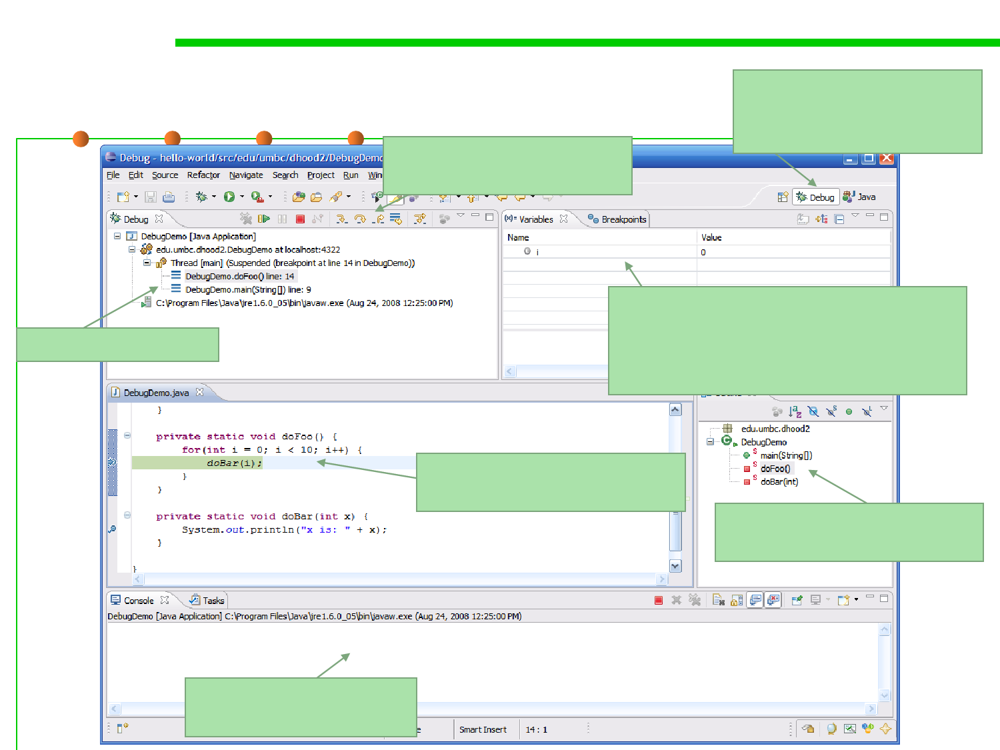

2.2 Process, Systems, and Tools of Software Construction
Debug perspective in Eclipse
These buttons allow you
to step through the code
Note new Debug
perspective – click Java to
return to normal
List of breakpoints
Variables in scope are listed here along
with their current values (by right
clicking you can change values of
variables as you program is running)
This pane shows the current
line of code we broke on
Current high level location
(class and method)
Output console, just like
in normal run mode